Conheça os bichos
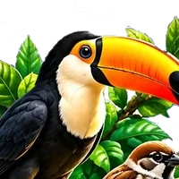
Tucano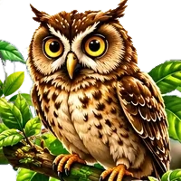
Coruja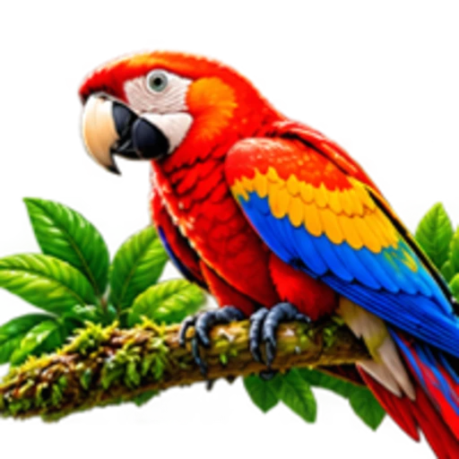
Arara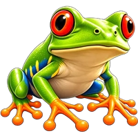
Sapo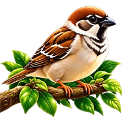
Pardal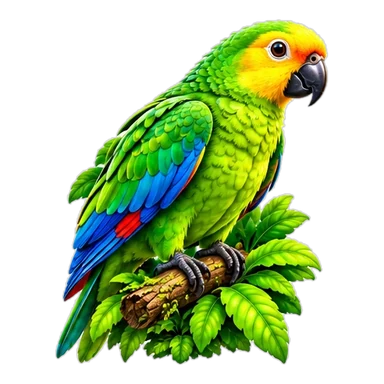
Papagaio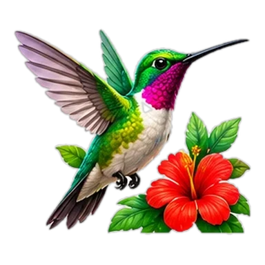
Beija-flor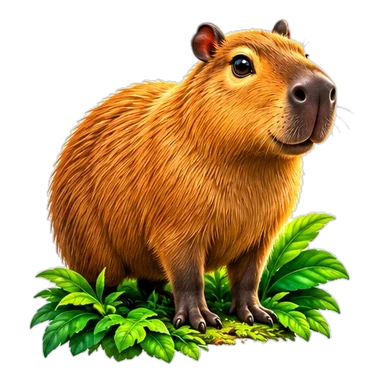
Capivara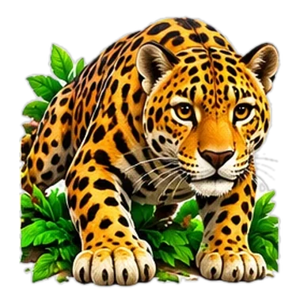
Onça-pintada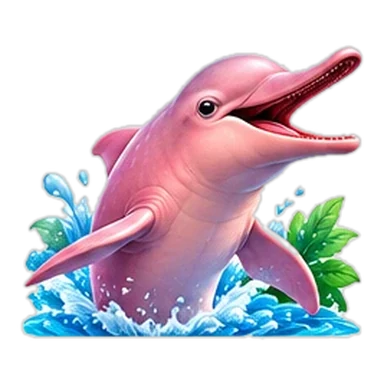
GolfinhoMacaco
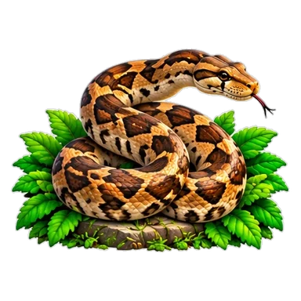
Jiboia14mundos pelo Brasil
54personagens
3idiomas
0dados pessoais coletados
Como se joga
Modo DesafioRepita sequências de sons cada vez mais longas. O jogo se adapta ao seu ritmo.
Modo LivreToque nos bichos e explore os sons à vontade.
Quem faz este som?Ouça o som e escolha o animal certo.
Minhas SequênciasGrave e ouça as suas próprias criações.
ConquistasComplete desafios e ganhe selos.
Funciona offlineOs sons são sintetizados no aparelho, sem baixar nada extra.
Feito para a família
Sem cadastro, sem login e sem compras. O progresso fica salvo somente no seu aparelho, e os anúncios, quando exibidos, são configurados para conteúdo infantil.
Disponível em Português, English e Español.